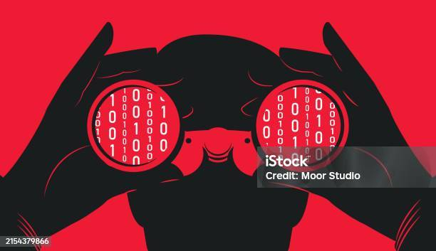

Phishing
O phishing é um dos golpes mais comuns na internet e pode afetar qualquer pessoa. Ele se aproveita da confiança dos usuários para roubar informações como senhas, dados bancários e informações pessoais. Entender como funciona esse golpe é essencial para evitar cair em armadilhas.
O que é Phishing?
Phishing é uma técnica de ataque cibernético que tenta enganar as pessoas para que revelem informações sigilosas, como senhas e dados de cartões de crédito. Os golpistas se passam por empresas, bancos ou serviços confiáveis para induzir a vítima a fornecer informações pessoais.
Exemplo: Você recebe um e-mail que parece ser do seu banco pedindo para atualizar seus dados. Ao clicar no link, você é levado a um site falso que rouba suas informações.
Pergunta 1:
Qual é o objetivo principal de um ataque de phishing?
Principais Tipos de Phishing
-
Phishing por E-mail
Criminosos enviam e-mails falsos que parecem ser de empresas legítimas para enganar as vítimas.
- Desconfie de e-mails urgentes pedindo informações pessoais.
- Verifique o remetente e erros ortográficos no texto.
- Passe o mouse sobre os links antes de clicar e veja se o endereço é confiável.
-
Smishing (Phishing por SMS ou WhatsApp)
Golpes enviados por mensagem de texto solicitam que você clique em links suspeitos ou forneça códigos de segurança.
- Bancos e empresas nunca pedem senhas por SMS.
- Nunca clique em links desconhecidos.
-
Vishing (Phishing por Ligação Telefônica)
Golpistas ligam se passando por suporte técnico, bancos ou órgãos governamentais para enganar as vítimas.
- Nunca forneça dados pessoais por telefone.
- Desligue e ligue diretamente para a empresa em caso de dúvidas.
-
Phishing em Redes Sociais
Perfis falsos se passam por amigos ou empresas para roubar informações ou dinheiro.
- Não compartilhe códigos de verificação recebidos por SMS.
- Verifique perfis antes de interagir ou enviar dinheiro.
Pergunta 2:
Qual dessas é uma forma de phishing?
Como Identificar um Ataque de Phishing?
- Mensagens urgentes pedindo informações pessoais.
- Links suspeitos que redirecionam para páginas falsas.
- Erros ortográficos e de gramática em e-mails e mensagens.
- E-mails e mensagens de remetentes desconhecidos.
- Solicitação de pagamentos inesperados ou mudanças de senha.
Pergunta 3:
Qual é um dos sinais comuns de um ataque de phishing?
Como se Proteger do Phishing?
video
Pergunta 4:
Qual medida ajuda a prevenir ataques de phishing?
O Que Fazer se Você Cair em um Golpe de Phishing?
- Troque suas senhas imediatamente.
- Entre em contato com o banco para bloqueio e suporte.
- Ative a autenticação em duas etapas.
- Denuncie o golpe.
- Monitore sua conta.
Pergunta 5:
O que você deve fazer imediatamente após perceber que caiu em um golpe de phishing?
Conclusão
O phishing continua sendo uma das maiores ameaças digitais, mas ao seguir boas práticas de segurança, você pode se proteger contra esses golpes. Sempre desconfie de mensagens suspeitas e nunca forneça informações pessoais sem verificar a autenticidade da solicitação.